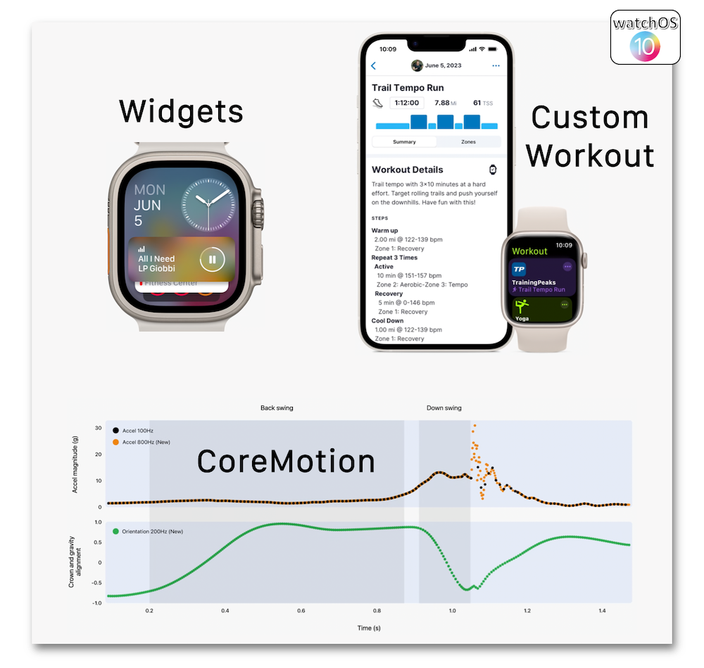

WWDC 2023: Platforms State of the Union
Find hereafter a detailed summary of a video that belongs to a taxonomy of some WWDC footages.
The original video is available on the Apple official website (session 102).
"Learn about the latest tools, technologies, and advancements to help you create even better apps across Apple platforms, including the all-new visionOS."
Hereafter, the underlined elements lead directly to the playback of the WWDC video at the appropriate moment.
Swift #
A macro is a new annotation encompassing generated code that can be easily exposed.
This new feature is a perfect way to revise a boilerplate code into less cumbersome lines of code.
Macros aren't only native, they can be created according to the needs as well.
SwiftUI #
The SwiftUI animations can now rely on the gesture velocity and a spring-based motion.
The AnimationPhase new API has also been introduced for rendering multi-part animations.
Finally, a complete support for keyframing is now included in SwiftUI.
The data management can now be done thanks to the SwiftData framework based on the new macro system and that seamlessly uses the Codable protocol.
Not only does this new OS version allow the Widgets rendering to become nicer in many places...
... but it also introduces interactivity for this type of element.
The SwiftUI-based architecture is the key for providing all these new cross-platforms features.
The presentation and the location of a functionality provided by an app are improved for Spotlight, Siri and Shortcuts.
The brand new TipKit framework is going to be of a great help for making users find out some new features of an app.
Gaming #
The new Game Porting Toolkit in macOS Sonoma that eases and speeds up the way to develop games relies on 3 steps:
Video #
Besides, the photos High Dynamic Range (HDR) has become an ISO specification and is now available as an API for a huge OS variety.
Video reactions and effects are embedded in the camera feedback through the app that can be aware of these new behaviors thanks to the code.
Screen sharing becomes easier by means of the ScreenCaptureKit framework by adding a preview of the possible multiple windows or apps to be watched.
While the camera support has been added to iPad, the Continuity Camera comes in handy for integrating audio and video of tvOS apps.
watchOS #
watchOS 10 brings a new design that will improve the user experience thanks to its partnership with SwiftUI whose huge capacities are the key of these modifications.
Transitions are eased with the detail view pivot and rely on a spring-based motion.
All the UI major components are automatically updated with the new enhancements.
In addition to these new features, widgets improvements with the new Custom Workout and CoreMotion API finally end up the enhancements list for watchOS 10.

Accessibility #
Two new features have been introduced to improve the user experience regarding the accessibility area:
A brand new environment value has been added to detect if an image is allowed to be automatically animated or must remain motionless.
Once again, a new environment value is introduced to limit the flashing or strobing lights in video contents.

Notice that the new Apple Vision Pro takes into account many accessibility features that can be implemented inside the visionOS.
Privacy #
Dedicated prompts have been created for the Calendar and Photos permissions for strengthening the privacy.
The new privacy manifests, that contain all the privacy practices regarding the third-party SDKs, will be combined by Xcode when distributing the app: it comes in handy for authoring labels in App Store connect.
Signatures for third-party SDKs have also been introduced to know the origin of the code.
The Sensitive Content Analysis framework expands the Communication Safety feature spectrum whose main goal was to protect children in Messages.
Images and videos that contain nudity are now identified on the entire platform with the enhancement of the Sensitive Content Warning that blurs the inappropriate content.
App Store #
StoreKit empowers SwiftUI to provide a better developer experience for creating an in-app purchase interface tailored as well for accessibility as for localisation.
Finally, SKAdNetwork version 5 will help to be aware of the advertising relevance inside an app through mesurements.
Xcode #
The source editor displays powerful and adaptative completions that come in handy when coding.
The new Swift Macros framework brings about a new syntax for the previews.
The previews can be used easily for different platforms and devices.

The same goal as git staging is included in Xcode 15 while all the changes can be reviewed in a single view.
The test report has been revised for a better explanation of what needs to be done.
A detailed view of the test activities includes a timeline to select a specific moment in the video recording.
Many useful optimizations have been carried out in addition to a TestFlight tester notes sharing and the macOS notarization.
visionOS #
Building your first app is as easy as a pie...
... with SwiftUI, RealityKit and ARKit as the appropriate tools to get the best of the new Apple Vision Pro not to mention the accessibility.
Depth and 3D objects are taken into account by SwiftUI with the support of specific modifiers that bring about more details.
Some UI improvements like ornaments, hover effects and materials are available to render spatial experiences.
These spatial experiences partially rely on the connection between SwiftUI and RealityKit, including the Dynamic foveation technique, the MaterialX open standard and the RealityView (a new SwiftUI view).
ARKit has also a significant impact for creating such renders through the same Anchor concepts as on iOS plus the Skeletal Hand Tracking to craft custom gestures.
Finally, visionOS embeds many accessibility features by using the same techniques as on the other platforms.
Xcode is definitely the keystone of the developers tools through the previews and the simulator...
...not to mention its practical debug visualization.
The Reality Composer Pro application has been introduced to prepare the 3D environment to be injected into Xcode.
Vision Pro can also count on TestFlight to get the users feedbacks about these new apps.
The 3D model built par visionOS leads to a realistic sound through its PHASE spatial audio engine.
Besides the hover effect, Facetime has also been included in visionOS with SharePlay and the brand new Persona feature.